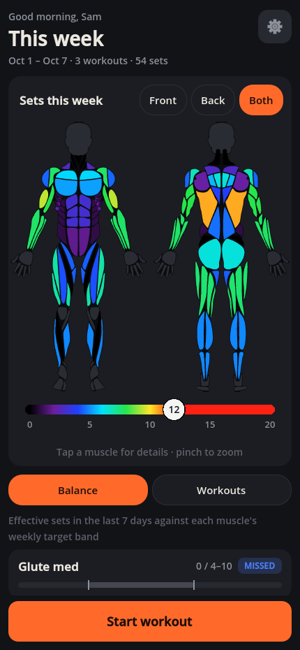
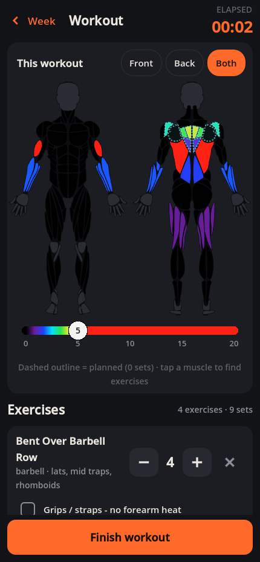
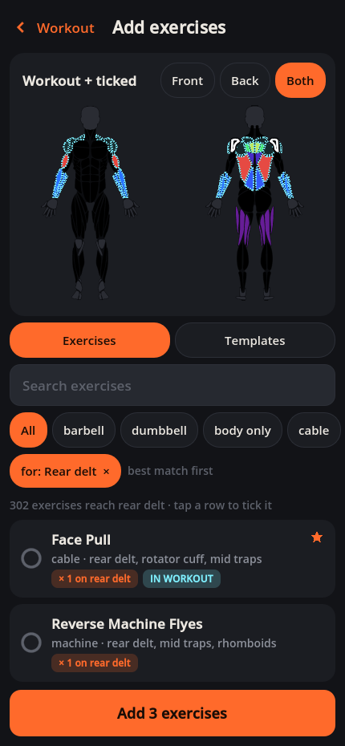
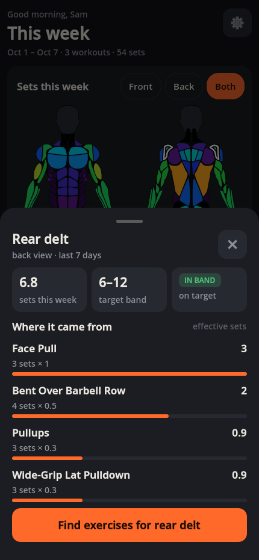
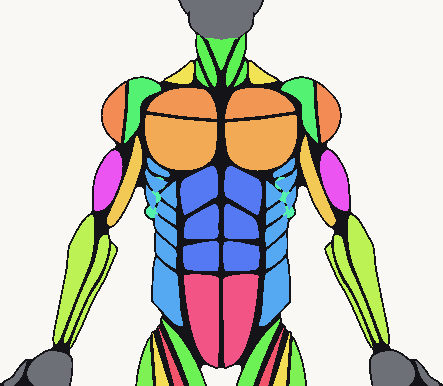
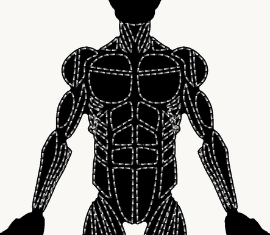
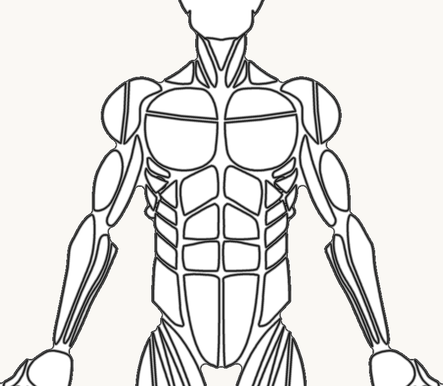

A phone app for logging gym workouts. It shows how many sets each muscle got in the last 7 days as a colour heatmap on a body.
What's inside
1 Data flow · 2 App structure · 3 Screens and navigation · 4 Saved data · 5 Heat calculation · 6 Body rendering · 7 Behind the scenes
Built with Godot 4.3 · one codebase → Android apk + Windows exe · fully offline
Reading the file names: every monospace path is a real file, counted from the top of the repo (github.com/aphyr-dev/hotMuscles). A name ending in () is a function inside the file named next to it.

Data moves left to right. Body drawings and an exercise list go in on the left. Python tools on the PC turn them into data files, which are packed into the app and read when it starts. The only thing the app writes is your own workout log, saved on the phone.
Re-run python tools/appData/buildAppData.py when a body drawing or an exercise share changes. If a share is out of range, an id is unknown, or a muscle can't be reached, it stops and writes nothing.
Finished data files, read by AppData.loadAll() in app/core/appData.gd. The body PNGs ship exactly as made: each has a .png.import set to "keep", so Godot never re-compresses them.
The only files the app writes, all through app/core/storage.gd. Small, versioned, crash-safe. Settings → "Export backup" writes them all into one backup file.
| Folder | Ships? | Files |
|---|---|---|
app/ | in the app | main.gd + main.tscn the root · core/ appData, storage, appTheme, heatEngine, heatGradients · screens/ appScreen (shared base), weekScreen, workoutScreen, pickerScreen, settingsScreen, profileSetup · components/ bodyView + bodyMap.gdshader, kineticScroll, heatRangeSlider · ui/ ten small widgets |
appData/ | in the app | exercises.json · muscles.json · bodyMaps/male_front.png, male_back, female_front, female_back |
tools/ | PC only | appData/ buildAppData.py, bakeBodyMaps.py, curatedExercises.json · muscleCarve/ extractShapes.py, carve.py, polygonCut.gd + preview/inspection helpers · build/ buildAll.py, checkBuild.py · icon/ makeIcon.py |
tests/ | PC only | runGodot.py runs them all · test*.gd checks · shot*.gd screenshot drivers (page 8) |
data/ · models/ | PC only | data/muscleShapes/ sourceShapes.json + muscleShapes.json · data/sources.md where every input came from · models/muscleMap/source/ the MuscleMap Swift files |
docs/ · icons/ | PC only | docs/appSpec.md the spec · this guide · icons/ launcher PNGs made by makeIcon.py · root: project.godot, export_presets.cfg |
AppRoot (app/main.gd, the script on app/main.tscn) is the top node of the app. It keeps the stack of open screens and the layer for sheets and toasts. Three services stay loaded the whole time (Godot "autoloads", listed in project.godot): AppData holds the shipped files, Storage holds your saves, AppTheme holds the colours. Two helpers, HeatEngine and HeatGradients, only calculate. Screens are built from shared widgets in app/ui/.
Storage.setEntrySets(). That ends in save() in storage.gd, which writes the file and emits changed("workouts") (a Godot signal: a broadcast message). Each screen connects to it in its _ready() and refreshes in _onStorageChanged(). Screens never call each other directly.AppTheme.apply() rebuilds every style from the palettes table at the top of appTheme.gd (page, surface, text, accent, cold, hot, ghost…) and emits themeChanged. _onThemeChanged() in main.gd then calls rebuild() on every open screen.AppRoot keeps the open screens in a stack: push() in app/main.gd slides a screen in on top, pop() slides it away. Week is always at the bottom. Each arrow below is labelled with the main.gd function that opens the screen. Bottom sheets (like the region sheet) are not screens: openSheet() slides them up from a separate overlay layer.



startWorkout() stamps a start time; Workout slides in.addEntries() saves them in one write, each at 0 sets.setEntrySets() saves on every tap; muscles light up.finishWorkout() drops 0-set rows, stamps the end time._onStorageChanged() redraws the heat; a toast confirms.onBack() (setup steps back, the editor asks about unsaved changes). 3 Otherwise pop(). 4 Nothing left: quit (Escape on PC never quits).startUp() in main.gd opens Week, then the running workout on top. The editor changes a copy until "Save changes" calls updateWorkout().Each kind of data is saved in its own JSON file in Godot's user:// folder, all written by app/core/storage.gd. loadAll() reads all five at start-up and save() rewrites one whenever its data changes. Every file is wrapped as {"version": 1, "data": …}, so a future layout change can upgrade old files (_migrate()).
user:// is: Android /data/data/com.aphyr.hotmuscles/files/ (private to the app; uninstalling deletes it) · Windows %APPDATA%\Godot\app_userdata\hotMuscles\ · backups go in user://backups/backup_<date-time>.json plus the clipboard.defaults: defaultProfile()
defaults: defaultSettings()
per exercise id · defaults: defaultPref()
| File | Written by | Storage functions called |
|---|---|---|
profile.json | profileSetup.gd, settingsScreen.gd | setProfileValues() · setProfile() |
settings.json | settingsScreen.gd, the 0–N slider in app/ui/bodyCard.gd | setSetting() |
exercisePrefs.json | pickerScreen.gd (star, hide), workoutScreen.gd (grips) | setFavourite() · setHidden() · setGripsMemory() |
workouts.json | weekScreen.gd, workoutScreen.gd, pickerScreen.gd | startWorkout() · addEntries() · setEntrySets() · finishWorkout() · deleteWorkout() · updateWorkout() |
templates.json | week + workout (save), picker (rename, delete) | saveTemplate() · renameTemplate() · deleteTemplate() |
_writeSection() writes workouts.json.tmp first and swaps it in only once it is complete, so a power cut mid-save leaves the old file whole. A file that can't be read is renamed workouts.json.bad by _readSection() and only that section starts fresh.isBackup() checks every section has the right type. askImport() in settingsScreen.gd shows the workout and template counts and asks you to confirm. Then exportBackup() saves your current data first and importBackupText() replaces everything. All or nothing.Each exercise in appData/exercises.json lists the muscle regions it works and how much of a set counts for each (its shares). HeatEngine.weekHeat() in app/core/heatEngine.gd multiplies your sets by the shares and adds them up over the last 7 days. HeatGradients.amountColour() turns each region's total into a colour.
Automatic (788): tools/appData/buildAppData.py reads the coarse tags in data/freeExerciseDb/dist/exercises.json (primary 1.0, secondary 0.5) and splits each group over our regions with its defaultSpread table (chest → lowerChest 0.7, upperChest 0.3).
Curated (96): typed by hand in tools/appData/curatedExercises.json. Stretching, cardio (137): no heat.
Grips: 106 exercises have forearmKind "grip": HeatEngine.entryHeat() skips their forearm share when you tick grips. 28 are "direct" and always count.
The face pull works the rear delt fully (1.0); the row and the lat exercises only assist (0.5, 0.3). Tapping a muscle opens the region sheet (openRegion() in weekScreen.gd), which lists these rows from HeatEngine.contributions().
workoutsInWindow() keeps the 7 × 24 h before now, not the calendar week. Older workouts drop out.
amountColour() samples t = sets ÷ N on the presets table in heatGradients.gd. The slider sets N; above N is the top colour.
targetStatus() checks each region's band in muscles.json (from targetBands in buildAppData.py; 6–12 for most). Under 0.5 sets is missed. rankRegions() sorts the balance list.
30 regions in 7 groups (regions, groups in appData/muscles.json): Back 6 · Shoulders 4 · Chest 3 · Arms 3 · Core 4 · Legs 9 · Neck 1. The picker ranks by HeatEngine.recommend(): share + 0.5 × focus, plus small bonuses for favourites and used exercises.
Each body is drawn as one textured rectangle by app/components/bodyView.gd. The texture is not a picture. It is a region map, appData/bodyMaps/<body>_<view>.png, baked by tools/appData/bakeBodyMaps.py: each colour channel stores a different number per pixel (like an ID pass in compositing). The shader app/components/bodyMap.gdshader reads those numbers and colours the body on every frame. Below: male_front.png split into its channels.

mapIds in muscles.json). Shown with a random colour per id.

Storage.save() writes user://workouts.json and emits changed("workouts")._onStorageChanged() in weekScreen.gd calls HeatEngine.weekHeat(): one number per region.bodyCard.setHeat() → bodyView.setHeat(); each number goes through amountColour() into the palette.bodyMap.gdshader looks up every pixel's region id in the palette, so the GPU recolours the body.AppData.bodyMap() logs an error naming the file instead of quietly drawing something else.Two jobs happen out of sight. Scripts in tools/ build the data files once on the PC, so the phone has almost nothing to compute at start-up. And every build is checked against two time limits, so the app stays quick to open and smooth to use.
_onFirstFrame() in main.gd, checked by tests/testStartup.gd and checkBuild.py (fresh-PC first launch: under 2 s)worstFrameLimitMs in testStartup.gd. Aim 33 ms (30 fps); v0.3 worst was 27–32 msLong lists fill in over several frames. pickerScreen.gd builds firstRows (6), then rowsPerFrame (3) per frame up to pageSize (40); all at once was a 90 ms stutter. weekScreen.gd does the same (firstBalanceRows).
Update rows, don't rebuild them. Existing rows are changed or moved in place.
One write for many values. A write costs about 4 ms, so Storage.addEntries() and setProfileValues() save many values at once.
Body maps load in the background. _startMapDecodes() in appData.gd decodes the PNGs on WorkerThreadPool threads.
Idle bodies sleep. bodyView.gd calls set_process(false) once nothing on the body is animating.
tests/, all run through runGodot.py: testHeatEngine.gd (maths), testStorage.gd (saves, backups), testFlows.gd (every screen with real numbers), testTouchUi.gd (synthetic finger), testKineticScroll.gd, testStartup.gd (timing), testBuildAppData.py (bad data refused). checkBuild.py also opens each exe three times on a throwaway save folder.python tools/appData/buildAppData.py
python tools/build/buildAll.py
python tools/build/checkBuild.py <exe> <apk>
Builds land in builds/hotMuscles_vNNN (not in the repo; shared on the Releases page). checkBuild.py fails any build that holds data/, models/, tools/, tests/, docs/ or icons/.